FAQ
Wie füge ich den Leistungstag Kalender meinem privaten Kalender hinzu?
Klick einfach auf das Plus rechts unten im
Kalender oder nutz "https://ics.leistungstag.beer" falls du nicht so ein Google Freund bist.
Was ist der Zweck dieses Vereins?
Der Verein wurde gegründet, um wöchentlich in verschiedenen Lokalen zusammenzukommen, Spaß zu haben und die Vielfalt der örtlichen Gastronomieszene zu erkunden.
Wie oft findet der Stammtisch statt?
Der Stammtisch des Vereins findet einmal pro Woche statt, und zwar immer an einem anderen Ort, um die Abwechslung zu fördern.
Kann jeder am Stammtisch teilnehmen?
Ja, der Leistungstag steht allen offen, die sich gerne in geselliger Runde treffen, neue Leute kennenlernen und gemeinsam Spaß haben möchten.
Muss man Vereinsmitglied sein, um teilzunehmen?
Nein, der Stammtisch ist für jedermann zugänglich. Die Mitgliedschaft im Verein ist optional und bietet zusätzliche Vorteile wie exklusive Veranstaltungen.
Wie erfahre ich, wo der nächste Stammtisch stattfindet?
Die Informationen zu den wöchentlichen Stammtischen werden in unserer Telegram Gruppe verteilt. Schau regelmäßig vorbei, um auf dem Laufenden zu bleiben!
Gibt es Themen oder Aktivitäten bei den Stammtischen?
Die Stammtische sind lockere Treffen, bei denen der Fokus auf Spaß und geselligem Miteinander liegt. Es gibt keine festen Themen, aber spontane Aktionen und Spiele sind immer willkommen.
Wie kann ich dem Verein beitreten?
Um Mitglied zu werden, besuche einen Leistungstag und Frage nach einem Antragsformular. Die Teilnahme am Stammtisch steht jedoch jedem offen, unabhängig von der Mitgliedschaft.
Gibt es Kosten für die Teilnahme am Stammtisch?
Die Teilnahme am wöchentlichen Stammtisch ist in der Regel kostenfrei. Eventuelle Kosten für Speisen und Getränke trägt jeder Teilnehmer individuell.
Kann ich auch einen Ort für einen Stammtisch vorschlagen?
Absolut! Wir freuen uns über Vorschläge für zukünftige Stammtisch-Lokale. Füge deine Orte hinzu indem du dem Leistungsbot passende Befehle schreibst.
Was macht diesen Leistungstag besonders?
Unser Leistungstag zeichnet sich durch seine lockere Atmosphäre, die Vielfalt der Mitglieder und die Erkundung unterschiedlicher Lokale aus. Wir setzen auf Spaß und Gemeinschaftsgeist!